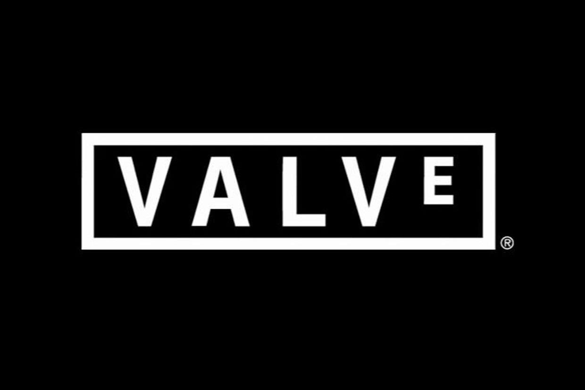

Valve
Valve Corporation ([vælv], также известная как Valve Software, с англ. — «вентиль, клапан») — американская частная компания, занимающаяся разработкой, изданием и цифровой дистрибуцией компьютерных игр. Её наиболее известные продукты — сервис цифровой дистрибуции игр и программного обеспечения Steam, компьютерные игры и серии Half-Life, Portal, Counter-Strike, Left 4 Dead и Dota 2. Большинство разработанных Valve игр использует её собственные игровые движки GoldSrc (до 2004-го), Source и Source 2. Штаб-квартира компании находится в городе Белвью, штат Вашингтон, недалеко от Сиэтла.
О компании
Американская частная компания, занимающаяся разработкой, изданием и цифровой дистрибуцией компьютерных игр. Её наиболее известные продукты - сервис цифровой дистрибуции игр и программного обеспечения Steam, компьютерные игры и серии Half-Life, Portal, Counter-Strike, Left 4 Dead и Dota 2.